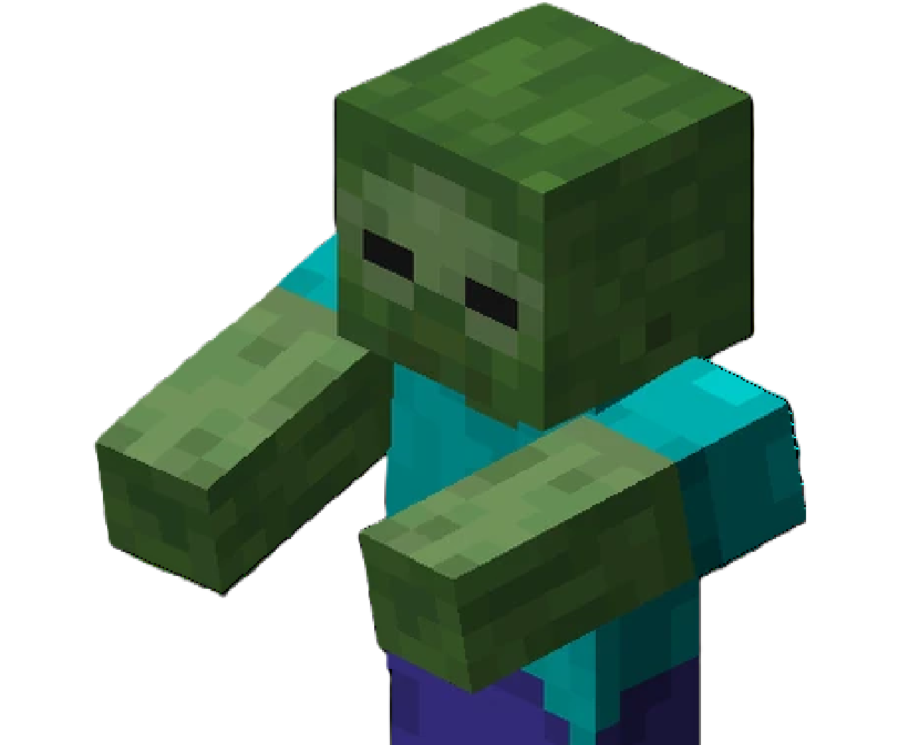
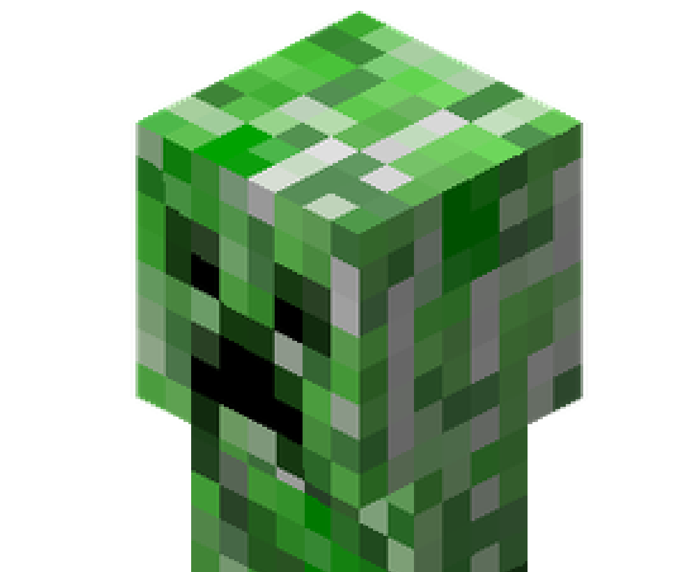
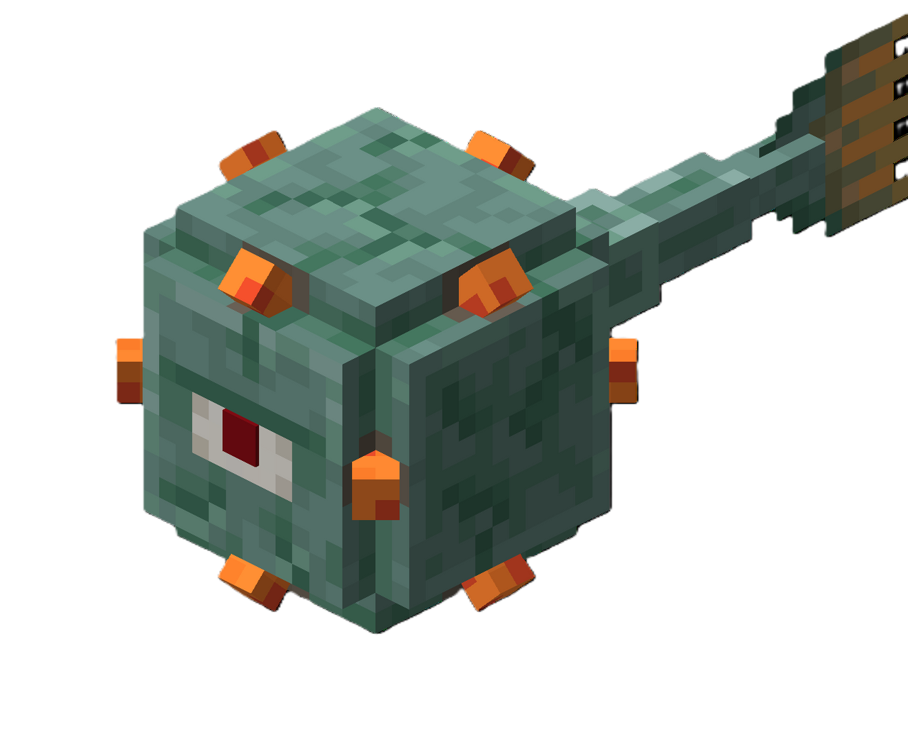
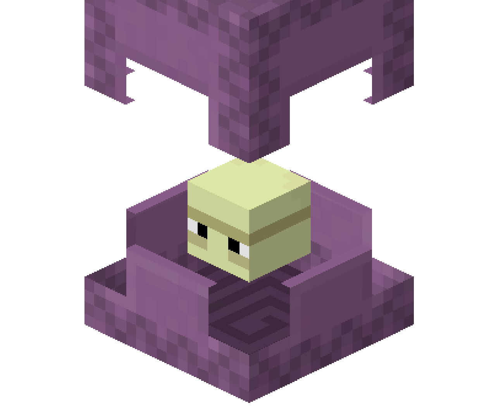
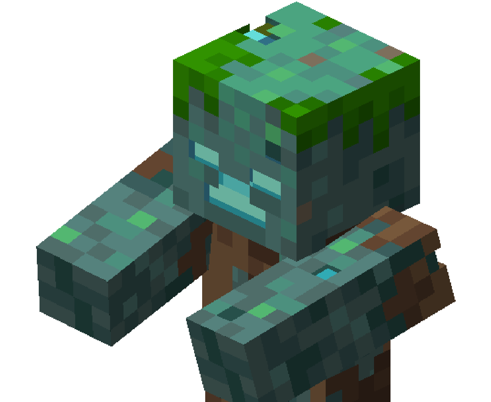
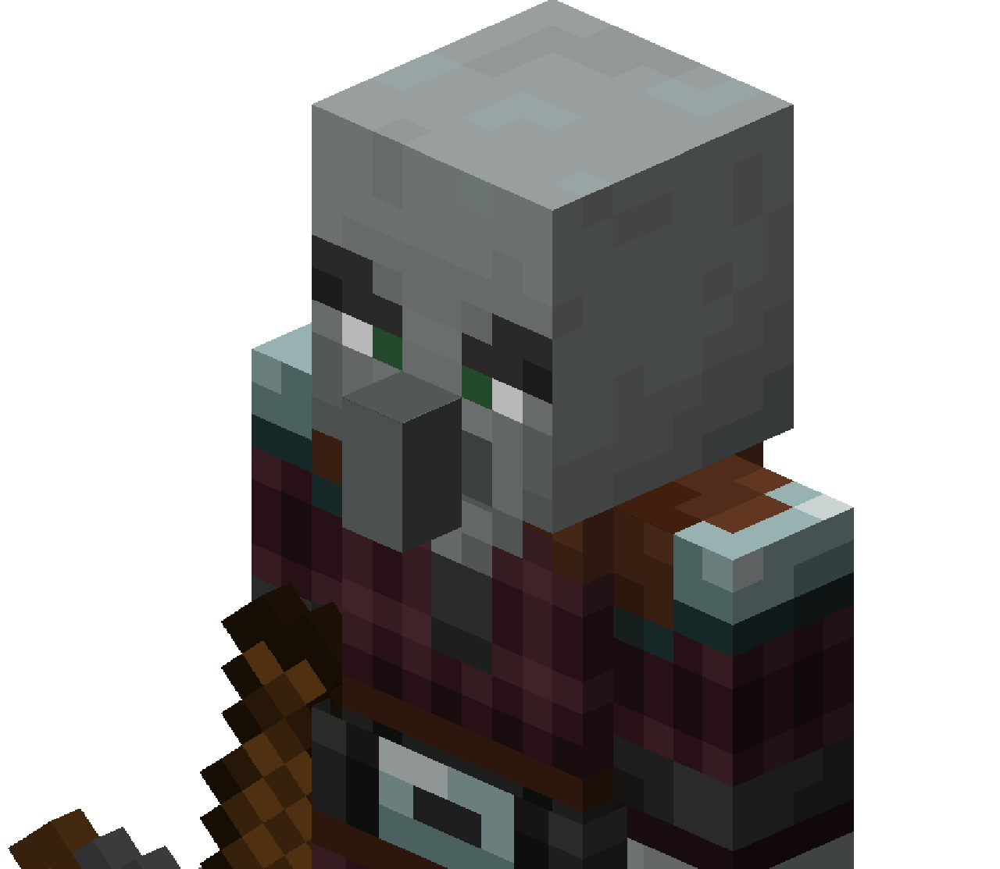
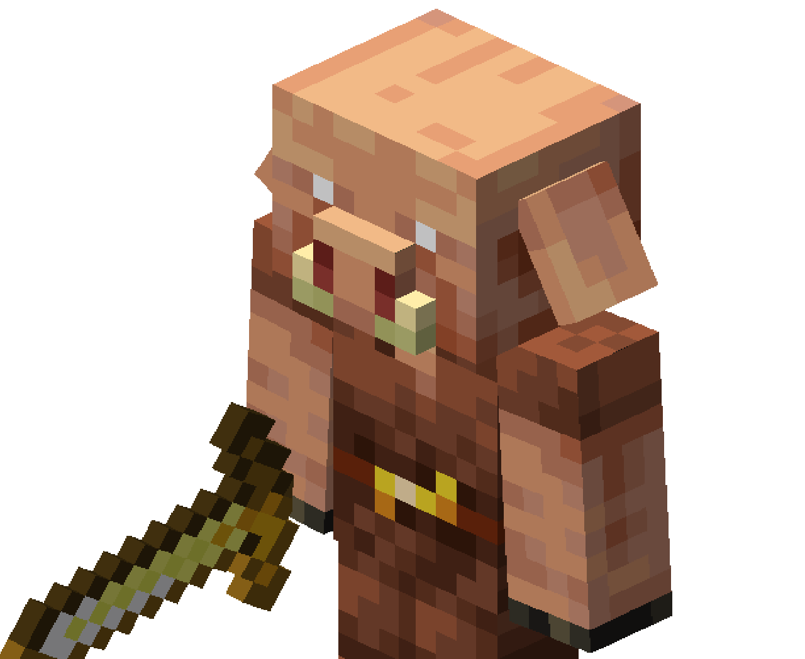
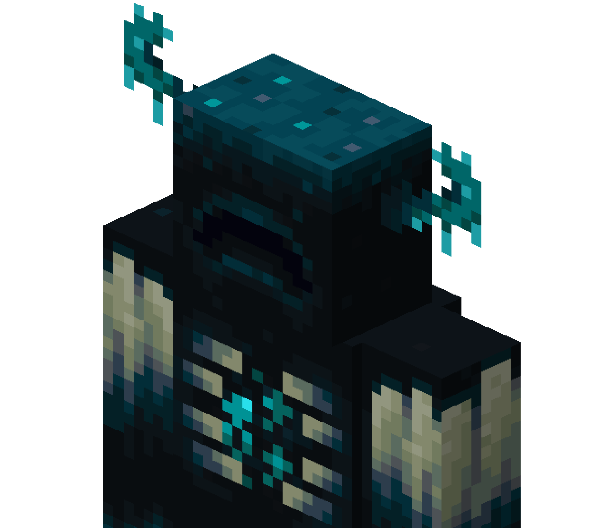

| # | Image | Name | When was it added? | Where does it spawn? | Can it spawn with armor/weapons/other items? |
|---|---|---|---|---|---|
| 1 |  | Zombie | 2009 - version 0.2.0 | Overworld | Yes - iron sword/shovel and any armor; carved pumpkin and jack o' lantern (only on halloween) |
| 2 |  | Creeper | 2009 - pre-alpha version 0.24_SURVIVAL_TEST | Overworld | No |
| 3 |  | Guardian | 2014 - version 1.8 | Overworld - oceans | No |
| 4 |  | Shulker | 2016 - version 1.9 | End cities | No |
| 5 |  | Drowned | 2018 - version 1.13 | Overworld - oceans | Yes - trident, fishing rod, nautilus shell; carved pumpkin and jack o' lantern (only on halloween) |
| 6 |  | Pillager | 2019 - version 1.14 | Overworld | Yes - crossbow |
| 7 |  | Piglin | 2020 - version 1.16 | Nether | Yes - golden sword/armor, crossbow |
| 8 |  | Warden | 2022 - version 1.19 | Overworld - Ancient cities | No |